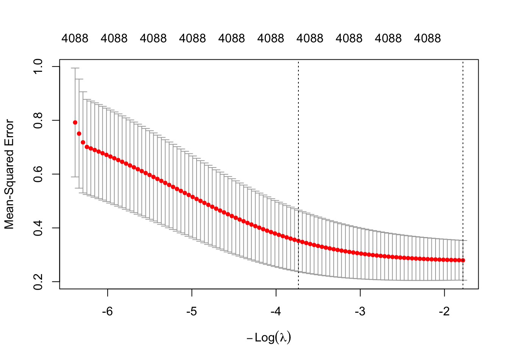
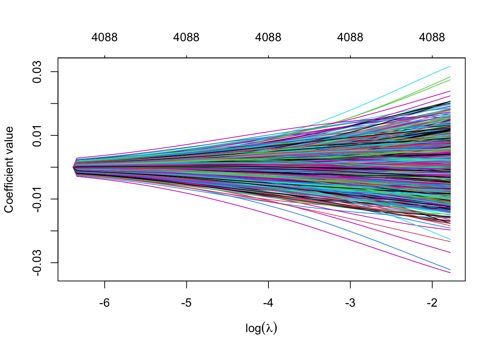
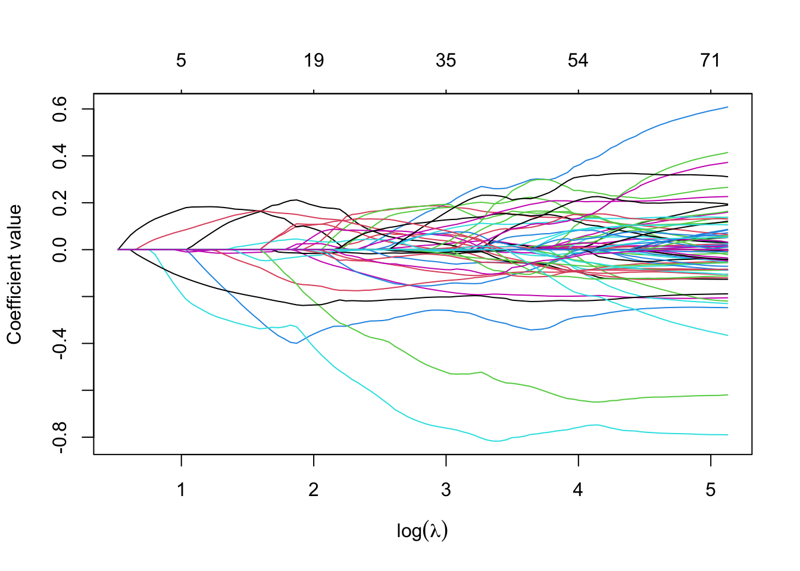
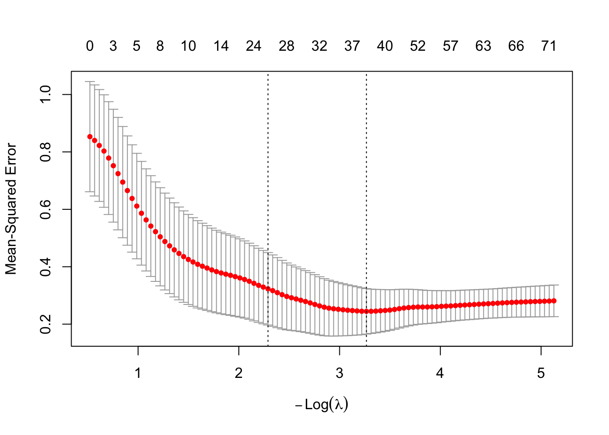
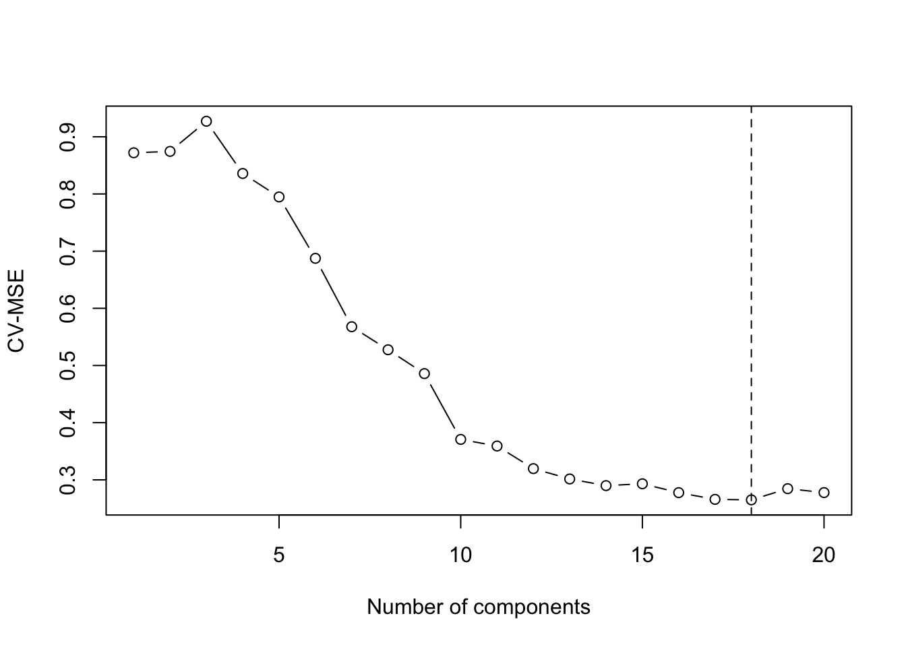

library(glmnet)
library(knitr)
set.seed(6021)
# Instructor's workaround
d1 <- readRDS("riboflavin.rds")
X <- as.matrix(d1$x)
y <- d1$y
n <- nrow(X)
p <- ncol(X)
# Use the same folds for all models
fold_id <- sample(rep(1:10, length.out = n))Module 8 Homework
Problem 0
I created HW8.qmd and added it to _quarto.yml.
Problem 1
Because there are 4088 predictors but only 71 observations, (p > n). Therefore, ordinary least squares cannot produce a unique solution.
ols_data <- as.data.frame(X)
ols_data$y <- y
ols_fit <- lm(y ~ ., data = ols_data)
na_count <- sum(is.na(coef(ols_fit)))
na_count[1] 4018R returns 4018 coefficients as NA because the predictors are linearly dependent. There are more predictors than observations, so the model matrix does not have full rank.
Problem 2
ridge_cv <- cv.glmnet(
X,
y,
alpha = 0,
foldid = fold_id
)
ridge_cv$lambda.min[1] 5.934162ridge_cv$lambda.1se[1] 41.86434[ _{} = ]
[ _{1se} = ]
plot(ridge_cv)
abline(v = log(ridge_cv$lambda.min), lty = 2)
abline(v = log(ridge_cv$lambda.1se), lty = 3)
As () increases, CV-MSE usually decreases at first, reaches a minimum, and then increases when the model becomes too strongly shrunk.
Problem 3
ridge_fit <- glmnet(X, y, alpha = 0)
plot(
ridge_fit,
xvar = "lambda",
xlab = expression(log(lambda)),
ylab = "Coefficient value"
)
As () increases, the ridge coefficients shrink toward zero. Ridge does not usually make coefficients exactly zero.
Problem 4
lasso_cv <- cv.glmnet(
X,
y,
alpha = 1,
foldid = fold_id
)
lasso_coef_1se <- coef(lasso_cv, s = "lambda.1se")
lasso_selected_1se <- sum(lasso_coef_1se[-1] != 0)
lasso_selected_1se[1] 23At (_{1se}), the lasso keeps 23 gene-expression features.
lasso_fit <- glmnet(X, y, alpha = 1)
plot(
lasso_fit,
xvar = "lambda",
xlab = expression(log(lambda)),
ylab = "Coefficient value"
)
plot(lasso_cv)
abline(v = log(lasso_cv$lambda.min), lty = 2)
abline(v = log(lasso_cv$lambda.1se), lty = 3)
Unlike ridge, lasso can make some coefficients exactly zero.
Problem 5
alphas <- c(0.25, 0.50, 0.75)
enet_results <- data.frame(
alpha = alphas,
lambda_min = NA,
min_CV_MSE = NA,
selected_features = NA
)
enet_fits <- vector("list", length(alphas))
for (i in seq_along(alphas)) {
enet_fits[[i]] <- cv.glmnet(
X,
y,
alpha = alphas[i],
foldid = fold_id
)
enet_results$lambda_min[i] <- enet_fits[[i]]$lambda.min
enet_results$min_CV_MSE[i] <- min(enet_fits[[i]]$cvm)
enet_coef <- coef(enet_fits[[i]], s = "lambda.min")
enet_results$selected_features[i] <- sum(enet_coef[-1] != 0)
}
kable(enet_results, digits = 6)| alpha | lambda_min | min_CV_MSE | selected_features |
|---|---|---|---|
| 0.25 | 0.159846 | 0.248514 | 71 |
| 0.50 | 0.076290 | 0.254279 | 56 |
| 0.75 | 0.048549 | 0.249729 | 47 |
best_enet_row <- which.min(enet_results$min_CV_MSE)
best_alpha <- enet_results$alpha[best_enet_row]
best_enet_mse <- enet_results$min_CV_MSE[best_enet_row]
best_enet_selected <- enet_results$selected_features[best_enet_row]
lasso_coef_min <- coef(lasso_cv, s = "lambda.min")
lasso_selected_min <- sum(lasso_coef_min[-1] != 0)The elastic-net model with the lowest CV-MSE uses (=) 0.25.
It selects 71 features at ({}), while lasso selects 42 features at ({}).
Elastic net may keep more correlated predictors than lasso because it combines the ridge and lasso penalties.
Problem 6
I used manual principal component regression with 10-fold cross-validation.
pcr_mse <- rep(0, 20)
for (k in 1:20) {
fold_errors <- c()
for (fold in 1:10) {
train <- fold_id != fold
test <- fold_id == fold
x_train <- scale(X[train, ])
train_center <- attr(x_train, "scaled:center")
train_scale <- attr(x_train, "scaled:scale")
train_scale[train_scale == 0] <- 1
x_test <- scale(
X[test, ],
center = train_center,
scale = train_scale
)
pca <- prcomp(x_train, center = FALSE, scale. = FALSE)
train_scores <- pca$x[, 1:k, drop = FALSE]
test_scores <- x_test %*% pca$rotation[, 1:k, drop = FALSE]
pcr_fit <- lm(y[train] ~ train_scores)
prediction_data <- as.data.frame(test_scores)
names(prediction_data) <- paste0("PC", 1:k)
fit_data <- as.data.frame(train_scores)
names(fit_data) <- paste0("PC", 1:k)
pcr_fit <- lm(y[train] ~ ., data = fit_data)
predictions <- predict(pcr_fit, newdata = prediction_data)
fold_errors <- c(fold_errors, (y[test] - predictions)^2)
}
pcr_mse[k] <- mean(fold_errors)
}
optimal_k <- which.min(pcr_mse)
optimal_k[1] 18plot(
1:20,
pcr_mse,
type = "b",
xlab = "Number of components",
ylab = "CV-MSE"
)
abline(v = optimal_k, lty = 2)
The optimal number of principal components is 18.
Problem 6a
X_scaled <- scale(X)
pca_full <- prcomp(
X_scaled,
center = FALSE,
scale. = FALSE
)
scores_full <- pca_full$x[, 1:optimal_k, drop = FALSE]
pcr_full <- lm(y ~ scores_full)
gamma_hat <- coef(pcr_full)[-1]
beta_scaled <- pca_full$rotation[, 1:optimal_k, drop = FALSE] %*%
gamma_hat
x_center <- attr(X_scaled, "scaled:center")
x_scale <- attr(X_scaled, "scaled:scale")
beta_pcr <- as.vector(beta_scaled) / x_scale
intercept_pcr <- coef(pcr_full)[1] -
sum(x_center * beta_pcr)
length(beta_pcr)[1] 4088The back-transformed PCR coefficient vector has 4088 coefficients.
Problem 6b
prediction_1 <- intercept_pcr + sum(X[1, ] * beta_pcr)
prediction_1(Intercept)
-6.793108 The predicted value for the first observation is -6.793108.
Problem 6c
All 4,088 gene-expression values are needed because every principal component is created from a weighted combination of all original predictors.
Problem 7
ridge_mse <- min(ridge_cv$cvm)
lasso_mse <- min(lasso_cv$cvm)
enet_mse <- best_enet_mse
pcr_best_mse <- min(pcr_mse)
comparison <- data.frame(
Method = c("Ridge", "Lasso", "Elastic net", "PCR"),
CV_MSE = c(
ridge_mse,
lasso_mse,
enet_mse,
pcr_best_mse
)
)
kable(comparison, digits = 6)| Method | CV_MSE |
|---|---|
| Ridge | 0.279367 |
| Lasso | 0.244601 |
| Elastic net | 0.248514 |
| PCR | 0.264997 |
best_method <- comparison$Method[
which.min(comparison$CV_MSE)
]
best_method[1] "Lasso"The method with the lowest CV-MSE is Lasso.
Ridge is often expected to work well when many correlated predictors have small effects. Lasso is often better when only a small number of predictors are truly important. Comparing the ridge and lasso CV-MSE values above shows which pattern fits this dataset better.